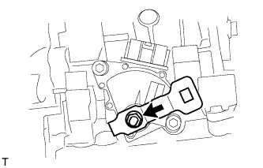
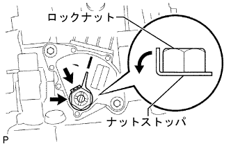

Neutral Start Switch Assembly Removal |
| 1. Disconnect Battery Negative Terminal |
| 2. Remove Radiator Upper Air Deflector |
Remove the 8 clips and the radiator upper air deflector.
| 3. Remove Battery |
 |
Loosen the nut and disconnect the battery positive terminal. (*1)
Remove the bolt and nut, and remove the battery clamp.
Remove the insulator.
Remove the battery.
| 4. Remove Battery Carrier |
 |
Remove the battery tray.
Detach the 2 clamps and disconnect the wire harness from the battery carrier.
Remove the 4 bolts and battery carrier.
| 5. Remove Battery Carrier NO.2 |
 |
Remove the 2 bolts and battery carrier No.2.
| 6. Disconnect Transmission Control Cable Assembly |
 |
Move the shift lever to the N range, remove the nut and disconnect the control cable from the control shaft lever.
Remove the clip and disconnect the transmission control cable assembly from the control cable bracket.
| 7. Remove Neutral Start Switch Assembly |
Disconnect the neutral start switch assembly connector.
 |
Remove the nut and spring washer, and remove the control shaft lever.
 |
Using a flat-head screwdriver, unstake the nut stopper, and remove the lock nut and nut stopper.
 |
Remove the 2 bolts and neutral start switch assembly.